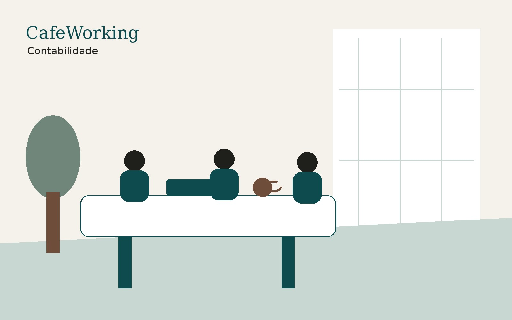

Diagnóstico inicial
Entendemos atividade, regime, faturamento e situação atual.
Organize sua empresa com rotina contábil, relatórios, obrigações fiscais e orientação empresarial, mesmo que você esteja fora de Belo Horizonte.

Contabilidade digital para prestadores de serviço, empresas e empreendedores em todo o Brasil, com suporte do Grupo Ciatos.
O objetivo é reduzir burocracia e dar ao empreendedor uma jornada mais clara, com suporte humano e tecnologia.
Entendemos atividade, regime, faturamento e situação atual.
Estruturamos acessos, documentos, notas e obrigações.
Acompanhamento de impostos, obrigações, folha e relatórios.
Quando necessário, apoio para tomada de decisão empresarial.
Você pode contratar online, acompanhar os próximos passos e, quando precisar, usar os ambientes do CafeWorking para reuniões, endereço e relacionamento empresarial.
“O digital escala. O ambiente físico gera confiança.”
Sim. A contabilidade digital pode atender clientes fora de BH conforme atividade e enquadramento.
Não. O posicionamento é contábil e empresarial, com apoio para organização e decisão.
Sim. Há uma página específica para troca de contador com orientações.
Quando necessário, demandas jurídicas podem ser direcionadas para o ecossistema do Grupo Ciatos.
Fale com a equipe CafeWorking e entenda o melhor caminho para sua empresa.
Solicitar diagnóstico